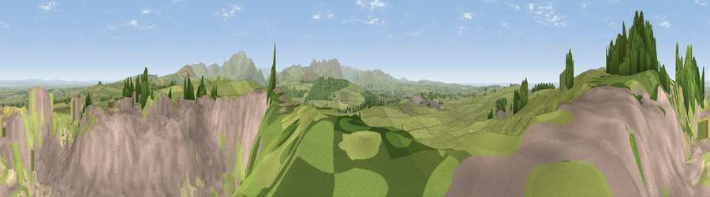

Viewpoint near Blindcrake
#2986 in England · top 29% of its area beats it · near BlindcrakeWhere it is
The exact computed spot (NY 14725 36125). Click the marker for map links.
The view, rendered

A 360° render of this exact spot computed from the terrain model, tree cover and land cover — summer colours, afternoon light, calibrated against photographs of famous viewpoints. Real trees, hedges and buildings will differ in detail.
The panorama
Grey silhouette: terrain skyline in each direction (720 bearings, Earth curvature and refraction included). Dashed green: skyline with trees (+15 m) and buildings (+8 m) as obstacles. Blue strip: how far the ground is visible on each bearing.
Where the view opens
Wedge length = distance to the farthest visible ground on that bearing (vegetation-aware). Rings at 10, 25 and 50 km.
What fills the view
53% grassland · 34% built-up · 6% woodland · 4% water · 1% bare ground · 1% cropland
Angular shares of the visible panorama (visual magnitude), not map area. Landscape diversity 0.49 (0–1 Shannon).
Key numbers
More beautiful places nearby
The staircase of upgrades: each row has a higher view potential than everything closer. Driving times are estimates from straight-line distance, calibrated against real road routing — check an actual route before setting out.
| Place | Direction | Drive | Score |
|---|---|---|---|
| Moota Hill | NW · 0 km | ~1 min | 77.3 |
| Watch Hill (Setmurthy Common) | SSE · 4 km | ~10 min | 77.4 |
| Viewpoint near Bewaldeth | E · 7 km | ~14 min | 78.0 |
| Binsey | E · 8 km | ~15 min | 80.5 |
| Viewpoint near Embleton | SE · 8 km | ~16 min | 81.8 |
| Viewpoint near Embleton | SE · 8 km | ~17 min | 84.6 |
| Viewpoint near Thornthwaite | SE · 11 km | ~21 min | 85.5 |
| Ullock Pike | SE · 12 km | ~23 min | 89.4 |
54.71288, -3.32516 · source: screening · position refined by local search. Computed location — check access rights before visiting.